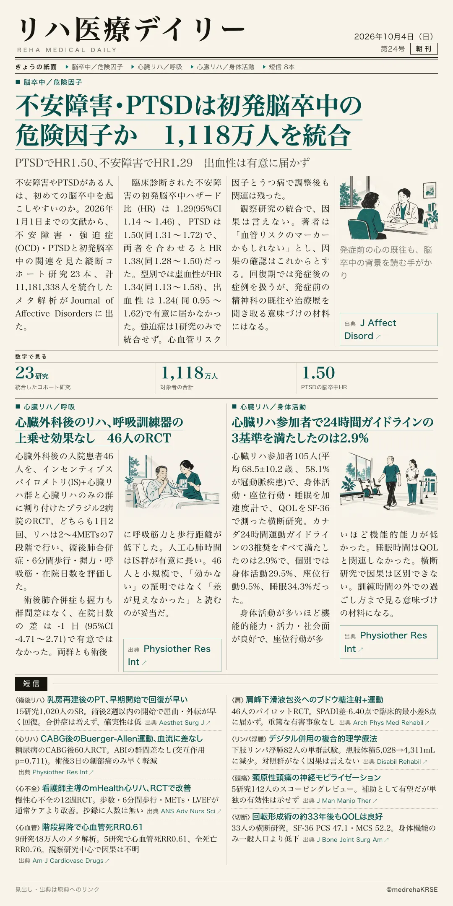
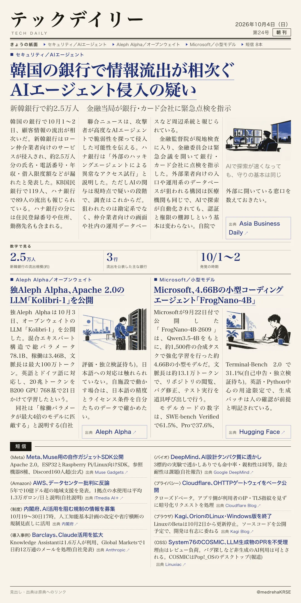

リハ医療デイリー
不安障害・PTSDは初発脳卒中の危険因子か 1,118万人を統合
PTSDでHR1.50、不安障害でHR1.29 出血性は有意に届かず
不安障害・PTSDと初発脳卒中の関連を調べた23コホートのメタ解析。

テックデイリー
韓国の銀行で情報流出が相次ぐ AIエージェント侵入の疑い
新韓銀行で約2.5万人 金融当局が銀行・カード会社に緊急点検を指示
韓国の銀行で顧客情報の流出が相次ぎ、AIエージェントの関与が疑われている。

PTSDでHR1.50、不安障害でHR1.29 出血性は有意に届かず
不安障害・PTSDと初発脳卒中の関連を調べた23コホートのメタ解析。

新韓銀行で約2.5万人 金融当局が銀行・カード会社に緊急点検を指示
韓国の銀行で顧客情報の流出が相次ぎ、AIエージェントの関与が疑われている。
